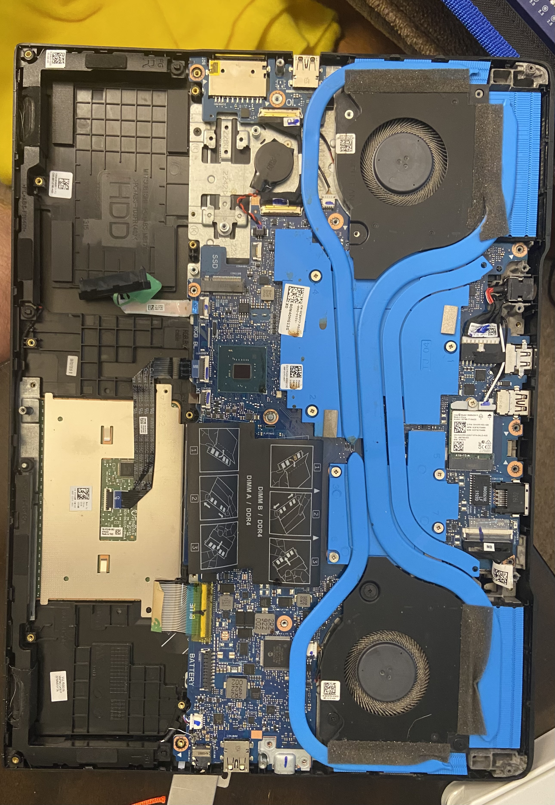
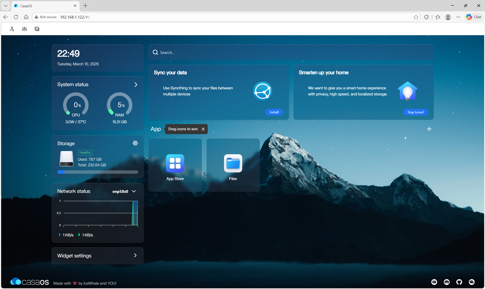
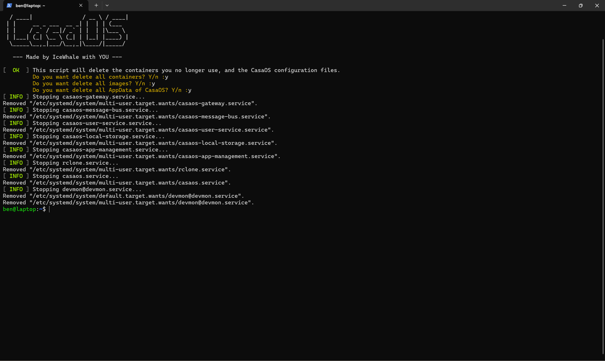
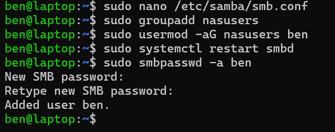
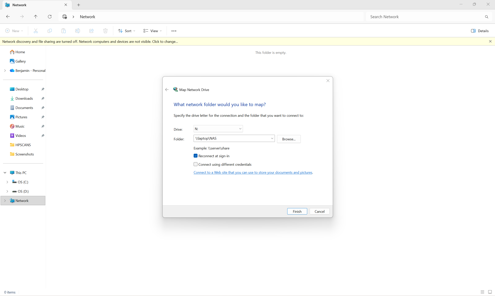
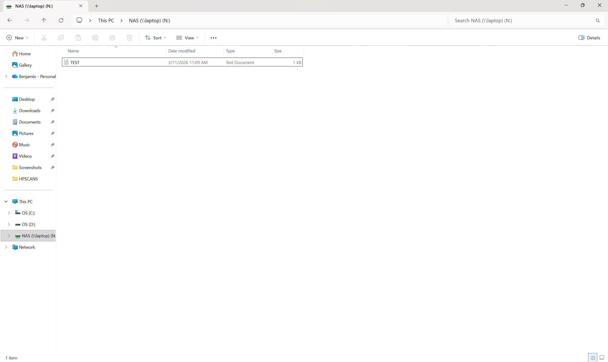
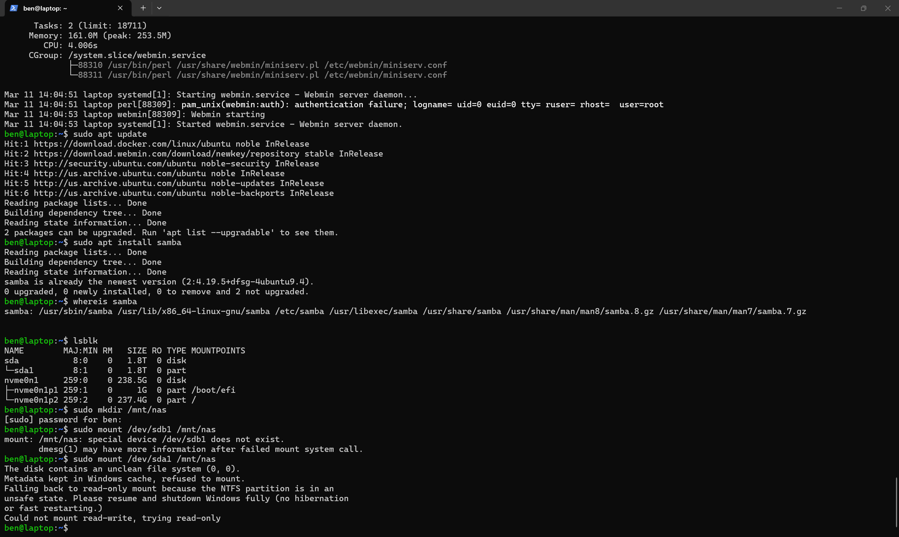
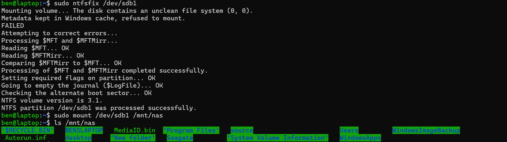
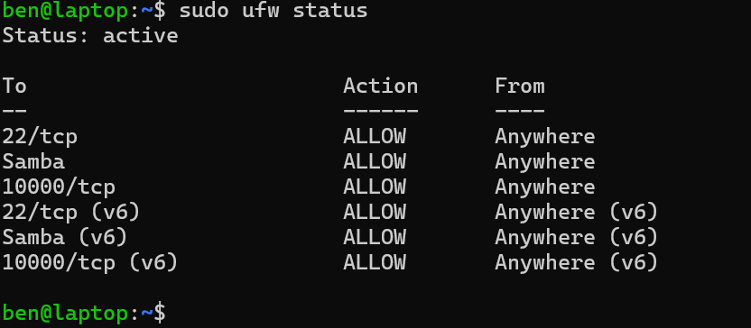

Overview
This project started as an attempt to turn unused hardware into something practical. Instead of buying dedicated server hardware, I reused old laptops to build a lightweight home lab platform that could serve two purposes: give me a Linux administration environment to learn on, and provide network-attached storage for my local network.
Hardware Repurposing


Reusing the hardware gave me experience beyond software setup. It required me to think through what components were still usable, how to combine them into one functional machine, and how to turn limited hardware into a practical home server instead of leaving it unused.
CasaOS to Webmin


I initially installed CasaOS because it offered a quick, polished dashboard experience. After testing it, I decided to remove it and switch to Webmin. That change was intentional. Webmin felt more barebones and closer to the actual system, which made it a better fit for learning Linux administration instead of relying on a more abstracted interface.

NAS Setup and Samba Configuration


Once the base system was ready, I configured the 1 TB hard drive as shared storage and set up Samba so the server could act as a NAS on the local network. I created a share, added the user to the appropriate group, set the SMB password, restarted the service, and then verified access from Windows by mapping the network drive.

Storage Troubleshooting


Firewall and Access Control

I configured UFW to allow the services I needed for this build, including SSH, Samba, and Webmin. This gave me experience thinking through service exposure instead of just making everything reachable by default.
- SSH for remote administration
- Samba ports for file sharing
- Webmin for browser-based management
Skills Demonstrated
- Hardware repurposing and practical home lab design
- Ubuntu Server setup and basic Linux administration
- Evaluating and changing management platforms based on learning goals
- Samba / SMB share configuration and user setup
- NTFS mount troubleshooting in Linux
- Firewall configuration with UFW
- Client-side validation from Windows
Next Steps
This project is the foundation of a larger home lab. Future additions may include backup workflows, monitoring, self-hosted services, and game server hosting. As the lab grows, those expansions can become related portfolio projects of their own.